LES LAPIDAIRES CHINOIS ET GRECS
LES LAPIDAIRES CHINOIS ET GRECS [ revu le 7 janvier 2002 Plan : préambule - lapidaires, orfèvres, joaillers ,... - les Arts méconnus - 1.
LES LAPIDAIRES DE L'ANTIQUITÉ ET DU MOYEN ÂGE , par F. de Mély. - 2.
L'ALCHIMIE CHEZ LES CHINOIS ET L'ALCHIMIE GRECQUE , Préambule
Cette section, qui sert d'introduction à nos études alchimiques, est en fait la dernière à avoir été rédigée. Il était normal qu'à un moment de notre quête, nous fussions en rapport avec les Lapidaires. L'hypothèse que nous défendons va, en effet, dans le sens de la transformation, de l'évolution pourrait-on dire, des pierres communes vers les pierres gemmes ou pierres précieuses, venues d'Orient. Cette évolution des pierres communes vers des pierres précieuses est évidemment soumise aux lois de la Nature et dépend de circonstances particulières qui oeuvrent dans les entrailles terrestres. Ces circonstances ont été analysées dans la section Mercure de nature
. On y fait voir que certains terrains de rencontre ont, pour ainsi dire, des traits particuliers qui sont propices à l'éclosion des pierres précieuses.
D'après la Genèse, la terre pierreuse, aride, a paru, dans l'ordre de la création, avant la terre nourricière, animée par les manifestations variées de la vie. L'autorité biblique se trouve ici d'accord avec l'autorité de la science [ F. Hoefer
]. L'esprit, très tôt, a été comme fasciné par l'examen des roches brillantes, cristallines : par leur éclat, leurs teintes variées, les pierres gemmes ont attiré les regards, non seulement des hommes sauvages, mais même de certains animaux, tels que les corbeaux , les pies
, etc. La connaissance des pierres précieuses a donc dû précéder - chose extraordinaire - celle des roches communes et c'est, à n'en point douter, la branche la plus ancienne de la minéralogie. Elle s'est exprimée, historiquement, par les traités sur les Lapidaires, qui font l'objet de la présente section. Les Anciens avaient, comme nous, observé que l'écorce pierreuse de la terre, semblant inanimée, se trouve la même sous tous les climats. Mais, encore à l'époque de Buffon, on pensait que des conditions climatiques locales, liées pour partie à l'insolation, pouvaient décider, comme par catalyse, de la gestation de certaines gemmes - cf. Buffon
-. Ce que les Anciens ignoraient, bien sûr, c'était le rôle remarquable que pouvaient jouer des facteurs comme la chaux, la silice, l'argile, plus ou moins mêlées aux détritus de la nature vivante, pour former ces superbes gemmes qui ont fait égarer tant d'esprits au cours des siècles ! Ainsi, ces substances minérales, réduites à leur plus grand degré de simplicité, ne sont, après tout que des rouilles [ ioV
], des oxydes de métaux aussi brillants que l'argent ou que l'or...Il a fallu des milliers d'années, les premières trouvailles sur certains sels naturels, disponibles dans des lacs naturels, comme en Egypte [ natron, borith
], ou dans des terrains naturels comme en Inde [ salpêtre, borax
], la découverte du verre, des expériences de hasard, de fortune dirions-nous, pour que certains hommes aient eu l'intuition géniale qu'ils pourraient peut-être, en mixant certains corps, précipiter l'action naturelle, assurer une brisure temporelle dont ils n'avaient à la vérité que peu l'idée, pour, plus tard se proclamer démiurges en ayant imité le Créateur : c'était la naissance de l'Art sacré, de l'alchimie... C'est là qu'interviennent les Lapidaires
de l'Antiquité. Pourquoi ? Parce qu'il apparaît que deux voies se sont côtoyées : l'une, vulgaire - oh ! ce n'est certes pas dans un sens péjoratif que nous le comprenons - et l'autre, sacrée - que d'aucuns, par contre, voudraient prendre dans un sens péjoratif, c'est-à-dire dans le sens d'un ésotérisme de bas aloi, d'une magie de pacotille ou d'un cabalisme théosophique -. Mais ce que nous révoquons en doute, c'est, d'une part, les sectataires qui professent que l'alchimie ne serait pas un ordre doctrinal constitué et, d'autre part, tous ceux qui parlent de « science occulte » et qui ne comprennent même pas l'absurdité qu'il y à à accoler l'épithète occulte au mot science. Cela est d'autant plus intéressant que ceux qui parlent des sciences occultes ne sont que rarement ceux qui les professent. Ceux-là, au contraire, récusent ce mot de science et préfèrent en tenir à la notion de science humaine. Là encore, l'accolade des deux mots n'est pas parfaite. C'est peut-être Jung qui a trouvé un chemin qui permet, à travers les méandres de la psychanalyse, de trouver les justes mots sur la chose hermétique. Le paradoxe est que Jung n'a compris goutte aux écrits des philosophes et qu'il leur a interdit - ce qui n'est pas rien - d'accéder à leurs matières premières par le truchement de la Raison. Non ! Car, pour Jung, l'alchimie n'a jamais été une « discipline » - par quel mot, décidément, percevoir la signifiance du fait alchimique ? - pratique. Jung a récusé l'aspect opératique, pragmatique en somme, de l'alchimie et a considéré que la prima materia n'existait, en toute hypothèse, que dans les cervelles des Amoureux de science...Qu'on songe que l' Index locorum de Jung ne contient point d'entrée [ cf. Douze Portes de Ripley
] pour la plus modeste substance chimique ! C'est là que nous sommes rendus à la croisée des chemins. Eh ! Ne pourrait-on pas choisir meilleur mot que « croisée » avant d'aborder la route des Lapidaires ?
Le terme de lapidaire s'applique à un certain nombre d'ouvrages en vers ou en prose, appartenant à la littérature « savante » du Moyen Âge de langue latine ou de langue vulgaire : il s'agit essentiellement de catalogues de gemmes, dans lesquels chaque nom est suivi d'un exposé sur la vertu organoleptique ou sur la vertu talismanique ou encore symbolique de la pierre ainsi désignée. Les lapidaires médiévaux ont recueilli diverses traditions, grecques et latines, qui, d'Aristote à Marbode, évêque de Rennes au XI e
siècle, passent par Pline l'Ancien et Isidore de Séville. Aux vertus naturelles et symboliques des pierres, le Moyen Âge a ajouté des valeurs morales et chrétiennes. Un ouvrage, devenu introuvable, fait le point sur les lapidaires médiévaux. Nous laissons la parole au chroniqueur de l'Ecole des Chartes, dans un fascicule paru en 1930 : Les Lapidaires français du Moyen-Âge , des XII e , XIII e et XIV e siècles
réunis, classés et publiés, accompagnés de préfaces, de tables et d'un glossaire par Léopold Pannier, ancien élève de l'Ecole des Chartes et de l'Ecole des Hautes Etudes, avec une notice préliminaire par Gaston Paris.— 52 ème
fascicule de la Bibliothèque de l'Ecole des Hautes Etudes. Paris, 1882. Grand in-8°, xr-342 pages.
Une introduction de M. Gaston Paris, dans laquelle un juste tribut d'hommages et de regrets est rendu, en termes émus, à la mémoire de Léopold Pannier, qui fut son élève, son collaborateur et son ami, précède, comme le titre l'indique, cet important recueil et en fait valoir, avec l'autorité qui s'attache à tout ce qu'écrit le maître incontesté de nos études, les mérites divers. La principale obligation que nous avons à Léopold Pannier est de nous avoir donné dans ce livre une édition, non-seulement lisible, mais encore aussi exacte et aussi soignée que possible, de l'un des textes les plus considérables, par la date à laquelle il remonte, de notre ancienne littérature : je veux parler de la première traduction en vers du Lapidaire de Marbode, qui est peut-être, selon M. Gaston Paris, «
l'œuvre littéraire la plus ancienne composée en France, qui soit arrivée jusqu'à nous,
» Ceux qui la compareront à l'édition de Migne, qui reproduit celle de Beaugendre, comprendront mieux que je ne saurais l'exprimer toute l'étendue du service rendu par Léopold Pannier à la philologie française.
Outre cette première traduction de Marbode, qui dut être faite vers 1120, le travail de Pannier en contient trois autres, toutes indépendantes et plus ou moins libres, et qu'il reproduit in extenso d'après les mss. qui les ont conservées et qui sont, le premier à Modène, le second à Berne, le dernier à Cambridge. Pannier s'occupe aussi des lapidaires en prose qui, comme il est arrive dans toutes les branches de notre littérature, sont venus après les lapidaires en vers. Mais il se borne à les décrire, en en donnant de courts extraits et en s'étendant un peu plus que sur les autres, en raison de la publicité qu'il a obtenue, sur celui qui porte, à tort du reste, paraît-il, comme Pannier s'attache à le prouver, le nom de Mandeville.
Chacun de ces lapidaires est précédé d'une introduction où sont traitées, quelquefois un peu trop sommairement peut-être, les diverses questions que chacun d'eux soulève. Une préface générale d'ailleurs ouvre le recueil, où est exposé en détail le sujet, avec le plan de l'ouvrage. Car c'est un ouvrage, et non pas seulement une édition de divers textes se rapportant à un même sujet que Léopold Pannier avait entrepris, et que sa mort prématurée l'a empêché d'amener au degré de perfection qu'on était en droit d'attendre de lui. La seconde partie des Lapidaires français
- je ne me suis jusqu'ici occupé que de la première, qui porte le titre particulier de lapidaires d'origine orientale, - traite des lapidaires d'origine chrétienne, et donne in extenso le texte du seul lapidaire en vers de cet ordre que nous possédions et des fragments d'un lapidaire en prose qui dérive de celui-ci. Par lapidaires d'origine orientale, Pannier entend spécialement ceux qui, «
bien que composés aux siècles les plus croyants du Moyen Âge et bien que leurs sources immédiates soient les écrits de Marbode et d'Isidore, c'est-à-dire de deux évêques chrétiens, sont d'une inspiration exclusivement païenne ; par lapidaires d'origine chrétienne, ceux dans lesquels la partie descriptive n'est qu'un accessoire, et sert seulement à faire accepter, à introduire l'autre, qui est d'inspiration toute différente, à savoir la signification symbolique qui, dans ces nouveaux traités, est attribuée aux pierres, et les propriétés morales et mystiques qu'on leur donne, en même temps que les propriétés médicales. Ce n'est plus, ajoute Pannier, à toutes les pierres que nous avons affaire, mais seulement à celles que Dieu a pris le soin de désigner lui-même et qui sont nommées, soit dans l'Ancien Testament, soit dans l'Apocalypse, soit dans certains Pères de l'Église. »
La bibliothèque Méjanes, à Aix, possède un mss. du lapidaire chrétien que Pannier n'avait pas connu. Une description de ce mss., due à M. Joret, qui en relève les variantes les plus importantes, est imprimée à la suite du travail de Pannier. Le volume est terminé par une table des pierres, un index des noms propres et un glossaire très-copieux, qui est l'oeuvre de MM. Gaston Paria et Oillieron. 0. C.
Mais quel est le rapport entre l'alchimie et les lapidaires ? Le traitement des pierres, l'étude de leurs propriétés, la façon de les réduire en leurs matières premières en vue de leur transformation - nous ne disons pas transmutation - en gemmes orientales. Mais ce traitement des pierres n'est pas seulement une opération chimique. C'est aussi une opération spirituelle qui passe par l'analyse du symbole. Comme en témoignent la signification accordée aux pierres et les propriétés qu'on leur prête. L'observateur est alors confronté à une lecture et à un examen à deux niveaux. Le premier niveau - celui du sens - passe par la considération de l'objet lapidaire, pris en lui-même : celui-ci peut être brut - une pierre ramassée dans un ruisseau ou arrachée à la terre - ou travaillé - pierre sculptée, pierre enchassée, etc. Le second niveau - celui du sentiment - passe par le symbole. Et ce symbole, qu'on le veuille ou non, est largement tributaire des idées que nous avons, ancrées dans notre subsconsient, en matière de sacré et de religieux. Ce n'est évidemment pas un hasard si Fulcanelli - dont l'existence et la réalité nous semblent être à l'égales de celles d' Artéphius ou du Trismégiste - a rédigé un ouvrage entier sur le Mystère des Cathédrales
. Parmi les voies choisies de la renaissance chrétienne post-révolutionnaire et romantique, le symbolisme occupe une place de choix. Les positions tenues par ce mode de pensée prêteraient, en effet, moins à la critique que celles de l’Ecole légendaire - entendez la Tradition redécouverte par Marsile Ficin et Pic de la Mirandole - ou du traditionalisme catholique proprement dit. Cependant, la condamnation, même indirecte, de ce dernier qui faisait appel, dans une large mesure, à la pensée symbolique et la victoire du thomisme, tendirent à marginaliser les symbolisants dans l’Eglise. Le droit de cité scientifique, de son côté, devait poser les mêmes problèmes. Après le succès extraordinaire de Symbolik und Mythologie
(1810-1812) de Creuzer, la thèse de l’unité première du symbolisme fut battue en brêche par Johann Heinrich Voss dans l’Antisymbolik
, dès 1824, précédant d’un an la traduction en français par Guignaut de la Symbolik
. Mais, nombreux furent ceux qui demeurèrent convaincus, notamment en France, de la légitimité de ce mode de pensée qui paraissait diamétralement opposé à la modernité que l’Eglise rejetait. C'est dans ce courant, pensons-nous, qu'il faut aller à la recherche de la liaison entre la cabale hermétique et la pensée religieuse, ceci, bien sûr, noté en dehors de toute idée de croyance et à envisager d'un unique point e vue conceptuel. Car ce qui compte, pour nous, est de l'ordre du sacré, voire du sacerdotal et se situe au-delà de la simple croyance qui conserve, au fond, une relation à l'icone que dépasse, par définition, le sacré, élevé à la hauteur d'un objet spirituel transcendental. Avec l’iconographie on touchait plus particulièrement aux croyances et pratiques populaires, et la Révolution française venait de redonner toute son importance à l’enjeu de l’opinion du peuple, tout en jetant un doute, par ses résultats, sur l’interprétation qu’en avait faite les intellectuels des Lumières. Dans ce domaine, l’Eglise pouvait plus aisément tenir son rôle de garant du sens et de transmetteur de l’influence spirituelle qui y était attachée. Voilà pourquoi les chanoines savants des cathédrales purent se constituer en gardiens des trésors cachés et en interprètes d’un savoir qui échappait au monde moderne. Il est incontestable qu'une part de ce savoir a résidé dans les textes apocryphes et pseudépigraphes des scholastiques médiévaux et des moines qui élevèrent le symbolisme à la hauteur d'une science constituée. Ces moines, disons-nous, réussirent le tour de force de forger dans un même moule ce qui dépendait du magistère intellectuel de l'Eglise et ce qui dépendait de l'antique pensée hermétique, dominée par des monuments comme le Poimandrès , le Timée
ou comme la Magie naturelle de Marsile Ficin.
C'est dans ce contexte qu'il faut apprécier les travaux de F. de Mély sur les lapidaires. Ces travaux furent d'ailleurs encouragés par Jean-Sébastien Devoucoux (1804-1870), vicaire général de Mgr. Du Trousset d’Héricourt (1797-1851) avant qu'il soit nommé évêque d’Evreux. Avec Devoucoux, la question des sociétés secrètes de bâtisseurs, du compagnonnage, s’ajouta à celle du symbole proprement dit et des apports non-chrétiens (cabale par exemple). Nous voici très près de notre sujet : inscriptions lapidaires, interprétations symboliques, cabale hermétique, pierres inscrites : tels sont les matériaux dont l'alchimiste novice a besoin pour sonder les vieux livres, pour démêler les linéaments des énigmes, des allégories des grimoires empoussiérés...Bref, Dans les dernières années de sa vie, le cardinal encouragea les recherches de Fernand de Mély (1852-1935) spécialiste en lapidaire, qui possédait des collections de pierres, ivoires, miniatures et d’orfèvrerie réputées. Mély, dont les travaux firent autorité, publia dans le
bulletin de la Société des Antiquaires de France , la Revue de l’art chrétien et diverses revues d’art [
Du rôle des pierres gravées au Moyen Âge , Revue de l’art chrétien, 1893
]. Ses travaux furent d'ailleurs remarqués par M. Berthelot ainsi qu'on le verra infra
. Mais on aurait tort de penser que les éléments développés ici ont un rapport - fut-il même lointain - avec le symbolisme chrétien tel que le concevaient, par exemple, Louis Charbonneau-Lassay (1871-1946) ou René Guénon (1886-1951). Loin de nous d'émettre quelque jugement que ce soit sur l'oeuvre de ces symbolistes : nous nous déclarons bien incompétents...Non, ce que nous voulions montrer, c'est qu'à une certaine époque, les courants chrétien et cabaliste furent mêlés, que le symbole fut le dénominateur commun du langage qui se parlât alors et que l'un des courants de ce vaste mouvement devait aboutir aux oeuvre hermétiques modernes, abouties, de l'envergure de la trilogie fulcanellienne. C'est là que nous abandonnons les symbolistes à leurs travaux pour nous préoccuper de l'étude historique de certains domaines des sciences de la terre. Car l'alchimie, si elle n'a pas été une science, encore moins une science occulte, a été un art utilisant les ressources de la terre pour son objet, déclaré sacré dès le temps des Egyptiens : les métamorphoses lapidaires.
LAPIDAIRES, ORFÈVRES, JOAILLIERS, BATTEURS D'OR....
Les rapports constants de ces métiers entre eux permettent de les placer tous à cet endroit ; voila ce que peuvent penser des lecteurs qui n'ont jamais lu un ouvrage de philosophie hermétique. Et de quelle branche de cette philosophie parlons-nous ? De l'alchimie, de l'Art sacré par excellence, de l'art d'Hermès Trismégiste, de ce personnage légendaire et fabuleux à qui l'on attribue des centaines de traités...et qui n'en a pas écrit une ligne pour l'excellente raison qu'il n'a jamais vécu. Le Pimandre
- Poimandres - forme comme la plaque tournante de l'univers du Trismégiste. C'est cet ouvrage que Côme de Médicis souhaitait lire avant de quitter le monde terrestre...C'est cet ouvrage que Marsile Ficin fut tenu de traduire avant la mort du roi...Mais Côme n'a pu attendre que Marsile ait terminé la traduction latine du texte...
Et, sans avoir à rechercher longuement quels furent les premiers en date, on peut croire que les orfèvres proprement dits, les ouvriers d'or, précédèrent les autres dans le chaos qui suivit la conquête franque, à l'époque des Croisades. Déjà, Sous Dagobert, Éloi, avant que de devenir ministre et évêque, avait travaillé l'or. Moins de quatre cents ans après, Jean de Garlande, dans son Dictionnaire, en parlant des orfèvres, les subdivise en monnoyers, fermalleurs, fabricants de coupes et orfèvres au sens actuel du mot. Au temps de Boileau, les orfèvres se sont un peu séparés de ces métiers divers. l'escarboucle des Sages
Les lapidaires portaient alors le nom de cristalliers ou pierriers dès le treizième siècle ; ils taillaient les pierres précieuses et le cristal de roche que les orfèvres montaient en or ou en argent. Les pierres les plus répandues dans le commerce étaient les rubis, les émeraudes, et en général toutes les pierres venues d'Orient. Le béricle était le cristal
de roche qui ne pouvait à cette époque se confondre avec le verre artificiel, mais déjà la fabrication du faux était à craindre pour les autres pierres. On en était venu à une imitation si parfaite des pierres naturelles orientales, que les lapidaires ne les achetaient qu'avec le plus grand soin.
Il n'est pas rare de voir de nos jours certains reliquaires précieux des douzième et treizième siècles ornés de pierres fausses, que d'ailleurs on mettait parfois en parfaite connaissance de cause, mais que d'autres fois on avait achetées sans y rien voir. «
Aulcunes foys, dit le Propriétaire des choses, cité par M. de Laborde dans son Glossaire, les faulses pierres sont si semblables aux vraies que ceulx qui myeulx si cognoissent y sont bien souvent deceulz. »
Ces falsifications amenèrent des répressions et des règlements : défenses furent faites de fabriquer à l'avenir «
pierres de voirre, vouarre vers, esmeraudes de vouarre, rubis de vouarre, etc. »
A part cela, pouvait être cristallier qui voulait bien, moyennant qu'il eût de quoi répondre et qu'il sût le métier. Le cristallier avait un apprenti auquel il pouvait adjoindre ses fils. Les veuves de maîtres, réputées incapables de montrer le métier aux apprentis, ne pouvaient tenir boutique où l'on travaillât.
Les autres règlements étaient à peu prés les mêmes que pour les autres corps de métiers ; on ne pouvait tailler de nuit, à peine de dix sols d'amende; depuis les croisades de saint Louis, en 1248, on payait la taille et le guet, « puis que le roi alla outre mer ».
L'ancien privilège ainsi aboli souleva bien des réclamations parmi les intéressés; ils firent valoir les privilèges fameux des imagiers dont le «
mestier n'apartient fors à la honorance de sainte église et des haus hommes »,
mais ils ne furent point ouïs dans leurs plaintes. Les orfèvres, eux, étaient plus importants. Ils travaillaient les métaux précieux, à ce qu'on appelait la touche de Paris, à cause de la pierre qui servait à la vérification. La touche de Paris était le titre le plus estimé des ouvriers de ces temps. [
Il existe un endroit, à Rome, où l'on peut - par cabale - vérifier la Vérité. Nous laissons au lecteur le soin de vérifier ce point de science - ]
Les statuts de Boileau, tout entiers faits pour les règlements d'administration des corporations, ne nous laissent guère entrevoir la manière de procéder des orfèvres et des cristalliers. Le plus souvent il faut croire que les uns et les autres se joignaient dans un travail commun et que le cristallier préparait à l'orfèvre les pierres que celui-ci enchassait dans l'or. Cependant l'un et l'autre travaillaient souvent à part, l'un pour tailler des coupes d'améthyste ou de cristal de roche, l'autre pour tourner et repousser une coupe de métal. [
voit-on avec assez de lucidité le travail de l'alchimiste, placé à une distance précise, entre l'orfèvre et le cristallier ? ]
L'orfèvre était libre au treizième siècle ; il devait seulement se servir du bon or de Paris, «
lequel passe touz ors de quoi en ouvre en nulle terre. »
L'argent devait avoir la touche des esterlins. Parfois même on permettait à l'orfèvre le travail de nuit pour le roi ou l'évêque de Paris.
Chacun à son tour ouvrait le dimanche et versait le produit de sa journée à la caisse de la communauté ; cet argent servait à nourrir les pauvres de l'Hôtel-Dieu. Les cristalliers, les batteurs d'or, et ce que nous appellerions aujourd'hui les métiers de luxe, possédaient tous cette caisse, qui n'avait qu'un emploi charitable.
Quoi qu'il en soit de la liberté de fabrication, les sanctions pénales contre les délinquants ne laissaient pas que de comporter de lourdes peines. Le prévôt pouvait bannir pour cinq ans les coupables.
Aux orfèvres et aux lapidaires-joailliers, nous joindrons ici les batteurs d'or, qui préparaient l'or destiné aux dorures de meubles et d'appartements et aux magnifiques manuscrits que nous voyons encore aujourd'hui. A cette époque, les batteurs d'or ne connaissaient pas le laminoir, et, s'il faut en croire le moine Théophile, les feuilles d'or s'obtenaient en battant l'or entre deux feuilles de parchemin poli et peint en rouge. un lapidaire du XVI e siècle, d'après Just Amman Les batteurs d'or étaient « membres des orfèvres », selon ce qu'ils disaient eux-mêmes.
Ces métiers subirent diverses tribulations pendant le Moyen Âge à cause des guerres et de la rareté forcée du métal. Il n'était point rare que le roi empêchât tout-à-coup la fabrication des pièces d'orfèvrerie, comme eu 1310, par exemple, où il fut défendu de fabriquer de la vaisselle pendant un an à peine de perdre tout.
L'année suivante, cédant aux remontrances des artisans, Philippe le Bel dut revenir sur ces mesures, mais avec modération, et seulement pour les objets destinés au culte. Au quinzième siècle, nouveaux empêchements également d'ordre politique ; la fabrication en souffrit beaucoup, et ne se releva guère qu'avec la renaissance et le luxe du roi François.
Nous n'avons point à parler ici des célèbres orfèvres d'Italie du quinzième siècle, dont l'un eut l'insigne bonheur de découvrir la gravure comme par surprise. Il faut lire dans le livre de M. Duplessis, l' Histoire de la gravure
, les lignes consacrées à cette demi-légende. Quoi qu'il en soit, le roi de France attira à sa cour les, élèves drs Maso Finiguerra
et autres artistes célèbres, dont le plus connu, sinon le plus
méritant, Benvenuto Cellini, a donné lieu à tant de fables et de légendes. [
Berlioz lui doit l'un de ses plus beaux opéras -
] La vérité est que, sous l'influence de ces artisans, l'orfèvrerie française, de religieuse qu'elle était, devint surtout mondaine. On n'apprécia plus les objets au
poids, mais au travail. Alors les orfèvres sont devenus autre chose que de simples batteurs de métaux, et l'un d'eux, Étienne de Laulne, grava lui-même l'intérieur de sa boutique avec la perfection d'un graveur de profession. Là était l'usurpation des orfèvres sur les imagiers que nous
constations dans un article précédent ; mais cette usurpation avait été si profitable qu'elle avait créé un art qui devait briller d'un vif éclat, la gravure en taille-douce. ¯ ¯¯
Quelles étaient les pierres les plus employées par les lapidaires ? A quoi servaient-elles exactement ? Et ou étaient-elles recherchées ? A quel niveau peut s'établir, de façon raisonnable, le rapport entre l'art des pierres et l'Art sacré ? Pour cela, nous allons emprunter des passages d'un superbe ouvrage, les Arts méconnus
, publié en 1881 par Emile Sordi. Nous aurons en mémoire que le vert est la couleur qui domine l'oeuvre alchimique. La Table d'Hermès est d'émeraude, le Lion
des alchimistes est vert ; les cierges dont Fulcanelli nous parlent sont verts, etc.
La vogue du vert et du bleu en Perse dès les temps antiques nous semble avoir été amenée par l'imitation des tons de la turquoise. Cette contrée possède les mines de turquoises les plus riches qui existent; elle les a toujours employées avec prédilection pour embellir et colorier les objets les plus usuels comme les plus précieux. Aussi, ces pierreries méritent-elles que nous nous
arrêtions à leur histoire, à leur usage et à l'influence qu'elles ont pu avoir sur le goût et les traditions de l'art de la Perse et de l'Asie centrale. La turquoise, ou plutôt les turquoises, tel est l'élément principal de décoration des bracelets comme des colliers, de la selle dit cheval ou du fouet du cavalier ; les turquoises placées dans tous les interstices de la pièce, serrées l'une près de
l'autre, et usées ensuite dans le même plan, contournent et couvrent les petits objets de luxe de la Perse et de l'Asie centrale, de la même façon que l'émail couvre ou tapisse entièrement les monuments de ses cités Le synonyme grec de smaragdus avec vert nous fait pencher à croire que c'était
parmi les couleurs de la turquoise, celle que l'on préférait dans l'antiquité; ainsi les rares exemples de gravures antiques sur turquoises que nous possédons sont de couleur verte ; tel le buste de Tibère (cabinet de Florence), dont la tête ronde-bosse, est de la grosseur d'une noix, tel celui de Livia, provenant de l'ancien cabinet de Marlborough, etc.
On a longtemps discuté sur l'usage de la turquoise dans les civilisations antiques, et sur son identification avec plusieurs pierres mentionnées par Pline. Suivant nous, M. King a démontré victorieusement que l'on ne devait pas la trouver dans le callais ou callaina, qui n'est autre que le péridot (jaspis aerizusa) ou jaspe céralé, lequel s'identifie parfaitement avec la saphirine chalcédoine (jaspe). Il est évident que c'est l'émeraude (smaragdus) herméenne ou perse (Persicus) de Démocrite, décrite par cet auteur, qui est le nom classique de la turquoise analogue à la pierre ou à l'ivoire fossile, parfaitement définie par Théophraste.
Nous pouvons donc supposer que l'architecture antique persane a dû préférer l'harmonie verdâtre de la turquoise pour l'émail, cette couleur devenue sacrée par la suite, et qui fut dès l'origine, celle des étendards de l'Islam, du Prophète et de ses descendants.
Il semble que l'exploitation successive des mines de turquoises du nord de la Perse, principalement dans la province de Khorasan, près de la ville de Nésébahur, a amené les Orientaux, de l'antique emploi des nuances vertes, préféré à toutes les nuances du bleu, depuis le ton intense jusqu'au bleu blanchâtre ou laiteux, en passant par l'azuré, c'est-à-dire par tous les tons
naturels des turquoises orientales, de vieilles ou de nouvelles roches. Aujourd'hui, on ne trouve plus guère que ces dernières, encore sont-elles de mauvaise qualité ; les mines de turquoises des vieilles roches étant épuisées, après avoir fourni, durant des siècles, à tous les caprices de l'Orient, et plus tard à ceux de l'Europe. Celle-ci, à la suite des croisades, émerveillée de
l'ornementalion magnifique que donnaient ces pierres aux harnachements et aux armes des Turcs, les importa dans l'Occident, sous le nom de turqise ou turquoise, dénomination fausse d'origine, qui leur est toujours restée. Mais leur vrai nom, encore usité aujourd'hui en Perse, est firouz mot qui signifie : bonheur, et exprime clairement toutes les propriétés miraculeuses qu'on
leur attribuait, car les Persans s'imaginent même encore aujourd'hui que cette pierre a la propriété de préserver de la mort violente et qu'elle protège la vertu, car elle perd ses couleurs, et se brise dans les mains du possesseur trop indifférent. (La turquoise osseuse s'altère par la chaleur du lit et la transpiration.)
Les Hindous, qui possèdent dans leur territoire de riches mines de turquoises, et sont de tous les peuples du globe les plus portés aux croyances mystiques et surnaturelles, avaient adopté les mêmes superstitions.
De ces deux courants, les idées talismaniques ont pénétré en Europe. Les officiers russes portent souvent en guise de talisman une bague ornée de turquoise. Les Russes, qui sont très superstitieux, attribuent encore aujourd'hui, à cette pierre, le don de porter bonheur.
On a longtemps contesté l'usage de la turquoise par les joailliers de l'Egypte ; les découvertes de M. Mariette ont établi la présence de ce minéral sur les armes et les bijoux de la XVII ème
Dynastie, comme le mafek. On extrayait la turquoise des ruines du Sinaï, notamment à Sarbout-el-Khadem ; elle y est d'un bleu très pâle et se décolore promptement, de là, sans doute, l'usage peu fréquent qu'on en a fait.
Ce sont surtout les Grecs qui, les premiers en Europe, introduisirent le goût de la richesse sévère, discrète, que donne la turquoise dans la joaillerie, et cela quand, à la suite des conquêtes d'Alexandre en Perse, ils s'approprièrent en masse toutes les richesses des Achéménides : plats, coupes, armures, dans
lesquelles une profusion de ces pierres incrustées dans l'or formaient l'élément principal. Ainsi, plus tard, le fourreau seulement de l'épée de Mithridate fut estimé quatre cents talents (deux millions de francs).
Le même goût pour le luxe persista à travers toutes les révolutions sociales et religieuses de l'Asie. La richesse insensée de toutes les Dynasties qui se sont succédé en Perse, séleucides, arsacides, sassanides ou des califes leurs successeurs, est devenue proverbiale comme les dénombrements de leurs trésors ont toujours paru fantastiques à nos pauvres civilisations occidentales.
Jusqu'à ces dernières années la race des Ottomans est restée l'héritière du luxe de l'Asie Mineure. Un sultan alla jusqu'à entretenir à la Seracyane (sellerie) de Constantinople, quatre mille orfèvres joailliers qui travaillaient
à l'ornementation des selles, housses et étriers. Une bride et une croupière étaient estimées un million, et à la fête de la circoncision de Mahomet III, la corporation des joailliers du Bezestân étalait sur ses habits la même somme de perles et de pierreries.
bouton sarte en argent orné de turquoises
De nos jours, la joaillerie persane, après des milliers d'années, malgré l'infériorité des matériaux et la médiocrité des fortunes, a conservé la tradition des pierreries incrustées dans l'or. Une des plus grandes différences que l'on puisse signaler dans son application moderne, c'est que parfois les bijoutiers orientaux, au lieu d'incruster les turquoises dans l'or, incrustent aussi l'or dans les turquoises. Leur procédé consiste à graver, sur ces pierres, des chiffres et des arabesques, qu'ils remplissent ensuite d'or fin et frappent comme sur de l'acier damasquiné. Vu la fragilité de la substance, il faut qu'ils procèdent avec une grande légèreté, ou qu'ils aient un moyen inconnu aux lapidaires européens.
Généralement les dessins gravés sur l'or des bijoux persans sont les mêmes que ceux des émaux qui couvrent les mosquées.
Parfois quelques coraux placés habilement au milieu des turquoises y jettent leur note gaie et toujours harmonieuse. Des pendeloques de verre coloré s'ajoutent à la pièce principale du collier; la légèreté compense ainsi une richesse quelque peu lourde, comme les sveltes minarets accompagnent l'immense nef des mosquées. [...]
Pauvre et triste époque que la nôtre, qui ne sait même plus imiter de telles merveilles ! L'Orient perd de plus en plus l'esprit de ces décorations pompeuses, et l'Occident est tombé dans les tons fades et neutres, dans la froide monochromie de l'or et dans la minutie de l'exécution !
Nous ne savons au juste ce que le lecteur pourra penser de cet extrait sur la turquoise...Peut-être comprendra-t-il que ce qui fait, avant tout, la beauté d'un objet, que ce qui compte dans son poids spirituel, avant l'or, bien terne, froid et monochrome, c'est avant tout la pierre enchassée qui vibre et fait vivre l'objet. Tel est, nous semble-t-il, le but de l'alchimie : faire vibrer l'esprit par la contemplation de la matière, par la compréhension des métamorphoses des pierres, par le sentiment esthétique ineffable qui est alors incrusté dans l'esprit de l'observateur. Par ce sentiment, qui, sans doute, constitue la vraie et unique transmutation. Par la beauté qu'il y a à faire accomplir dans un creuset en quelques jours à peine l'opération que la Nature met des millions d'années à accomplir ! 1. JOURNAL DES SAVANTS. OCTOBRE 1896.
LES LAPIDAIRES DE L'ANTIQUITÉ ET DU MOYEN ÂGE, par F. de Mély. Tome I er
. Les Lapidaires chinois; ouvrage publié sous les auspices du Ministère de l'instruction publique et de l'Académie des sciences. — Introduction, texte et traduction, avec la collaboration de M. H. Courel, in-4°. Paris, chez E. Leroux, 1896.
Les Lapidaires sont des traités dans lesquels on expose les propriétés
des pierres et leurs vertus : on y comprenait dans l'Antiquité et au Moyen Âge les pierres précieuses et les pierres communes, les minéraux, roches et pétrifications, les sels et autres substances cristallines d'origine minérale, et même les métaux, quoique ces derniers formassent une catégorie à part. Il existe des Lapidaires occidentaux : grecs, latins, français, allemands, espagnols, etc., et des Lapidaires orientaux : arabes, hébraïques, arméniens, sanscrits, chinois. Ces recueils sont fort précieux pour l'histoire des sciences, des arts et des religions, en un mot, des civilisations d'autrefois. En effet, ils renferment des documents très variés : les uns positifs et pratiques, minéralogiques, géographiques, historiques, fondés sur des observations réelles et applicables à la métallurgie , à l'exploitation des mines, à la médecine et à diverses industries ; les autres mythiques, légendaires, magiques, astrologiques, symboliques, et qui nous font connaître les opinions, les croyances, les superstitions de leurs contemporains. C'est une source inépuisable de renseignements, mais qui demande à être mise en œuvre avec beaucoup de prudence et de méthode. Les Lapidaires permettent d'établir le caractère véritable des connaissances des anciens peuples en des ordres divers; la filiation des idées et des découvertes, et, disons-le aussi, des préjugés et des erreurs, propagés d'une nation à l'autre, dans le cours du temps et de l'espace.
Aussi comprend-on l'attrait que l'étude des Lapidaires a présenté pour
un esprit distingué et curieux, tel que M. de Mély. Mais, si vaste et intéressant que soit ce domaine, il a été à peine exploré jusqu'ici, parce que les textes mêmes des Lapidaires sont demeurés pour la plupart
manuscrits; ou bien, ce qui revient au même, non imprimés en Europe.
M. de Mély a pensé, avec raison, qu'il fallait d'abord publier les principaux Lapidaires, en y joignant les traductions et commentaires convenables. C'est là une œuvre considérable, de très longue haleine.
L'auteur a débuté par celui des Lapidaires le plus éloigné de nous
par la langue, comme par les traditions du peuple pour lequel il a été
composé, le Lapidaire chinois. Je vais essayer d'en donner une idée, afin de marquer le caractère et rimportance de l'œavre entreprise par M. de Mély. II Exposons d'abord le plan du volume.
Il débute par une introduction en 58 pages, dans laquelle M. de Mély
explique comment il a été conduit à prendre comme base de sa publication une encyclopédie japonaise rédigée au siècle dernier, le Wa-Kan-San-Tsaî-Dzou-Ye [
En chinois ; Ho Jian san ts'aî t'oa hoei.
], dont les chapitres LIX, LX, LXI sont consacrés aux pierres, métaux et minéraux. Les caractères idéographiques sont, comme on le sait, les mêmes en japonais qu'en chinois. M. de Mély en donne la traduction (p. 1 à i50) et il reproduit le texte chinois, en 144 pages avec figures, d'après des photogravures de ce texte imprimé, photogravures qui, par leur nature même, excluent toute erreur de transcription ou d'impression (autres que celle du texte original, bien entendu). Le texte est accompagné de commentaires japonais. Ce texte même est extrait du Pen ts'ao kang mou
, vaste compilation chinoise relative à la médecine et à l'histoire naturelle, exécutée par Li Chetche, d'après les ordres de l'empereur Kia tsing, qui vivait au milieu du XVI e
siècle de notre ère, et présentée en 1596 par le fils de l'auteur à l'empereur Wan lib, de la dynastie des Ming. La traduction des portions du Pen ts'ao kang mou , non reproduites dans le Wa-Kan-San-Tsai-Dzou-Ye a été retrouvée par M. de Mély, dans
un manuscrit dû à un médecin nommé François Van der Monde, qui
a séjourné à Macao (1720-1732). Cette traduction se trouve aujourd'hui à la bibliothèque du Muséum d'histoire naturelle, de Paris, accompagnée de 80 échantillons minéralogiques rapportés par lui, vus et signalés depuis par Ed. Biot, puis réputés perdus, et dont 72, ont été retrouvés de nos jours par M. Lacroix, professeur an Museum, M. de Mély a reproduit ce complément dans les notes de son Lapidaire, qui forment 102 pages du volume. On y rencontre aussi une petite nomenclature chinoise de pierres et minéraux, écrite au XIV e siècle et traduite par
Bretschneider. On y lit surtout de nombreuses citations d'un ouvrage
européen capital, publié à Yokohama (1878-1883), et intitulé :
Les progrès de la nature japonaise et chinoise (2 vol, in-8°), par le Dr Geerts,
professeur de chimie et d'histoire naturelle à l'école de médecine de Nagasaki. Douze pages du volume de M. de Mély (253 - 264) sont consacrées au travail indispensable des identifications de nomenclature. Ces identifications reposent en partie sur des déterminations philologiques, pour lesquelles je n'ai aucune compétence, en partie sur l'étude des échantillons étiquetés, rapportés par Van der Monde et qui existent au Muséum, échantillons étudiés déjà par Ed. Biot [Journal asiatique, 1835-1840), et revus avec plus d'autorité, dans ces derniers temps, par M. Lacroix. Les analyses faites au Japon par le Dr Geerts ont, sous ce rapport, une importance exceptionnelle. Je rappellerai également l'ouvrage de M. Champion, paru en 1869, sur les industries anciennes et modernes de l'Empire chinois, d'après les renseignements personnels de l'auteur, qui a voyagé en Chine, joints aux notes tirées par Stan. Julien du Thien-kong-khaï-wou, ouvrage de Song-ing-Sing, daté de 1637. M. de Mély s'est aidé également des livres suivants : Pumpelly,
Geological Researches in China, Mongolia and Japon , publié dans le Recueil de
l'Institut Smithsonien, t. XV, Washington, 1867, in-4°. — Pfizmaier :
Beiträge zur Geschichte der Edelsteine und des Goldes , pages 181-256 du
tome LVIII (1866) des Mémoires, de l'Académie impériale des sciences de Vienne, — Notices
d'Abel Rémusat sur le Wakan-San-T'sai-Dzou-Ye, publiées dans la collection des Notices, et extraits des manuscrits , par l'Académie des inscriptions (1827).
J'y joindrai moi-même, dans le cours du présent article, divers documents , empruntés à une collection de 16 volumes in-4°, publiés à
Paris de 1776 à 1816, lesquels renferment des mémoires concernant
l'histoire, les sciences, les arts, etc., des Chinois.
Le volume de M. de Mély se termine par un index de 36 pages, fort
utile pour établir la concordance entre les diverses portions du livre.
Tel est le plan de cet important ouvrage, et telles sont les principales autorités sur lesquelles il s'appuie.
Peut-être eût-il été préférable, au point de vue de la clarté, que l'auteur eût reproduit directement le Pen tsao kang mou, et qu'il eût concentré et fondu, dans des notes au bas des pages, les documents de toute nature qu'il a rassemblés en appendice. Les recherches dans son
volume sont rendues souvient pénibles par la nécessité de consulter à la fois et constamment le texte de l'encyclopédie, les notes complémentaires, les identifications, sans lesquelles la comparaison avec les produits européens est impossible, enfin l'index qui relie le tout. L'unité de composition de son livre eût gagné à cette fusion. Mais, en somme, tous les documents y sont, et c'est là une critique légère, qui ne diminue en rien la grandeur du service rendu à la science par cette publication.
Entrons maintenant dans l'examen intrinsèque du Lapidaire chinois.
Je présenterai d'abord quelques observations sur la valeur historique et
sur le caractère des témoignages que l'on peut en tirer, relativement à
la science chinoise. Ensuite je passerai brièvement en revue le traité
chinois, j'en comparerai les faits, les doctrines et les préjugés à ceux des minéralogistes de l'antiquité gréco-latine et du Moyen Âge, et j'essaierai d'y rechercher, avec l'aide de M. de Mély, la trace des emprunts, avoués, inconscients ou déguisés, qui ont pu être faits par les Chinois en ce domaine, comme en tant d'autres, à la science occidentale, depuis le Moyen Âge jusqu'à nos jours. III
II s'agit d'abord de définir la valeur historique du document contenu
dans le Wa-Kan-San-Tsai-Dzou-Ye. C'est une encyclopédie datée du XVIII e
siècle : les additions et annotations japonaises qui y sont contenues ne comportent pas de date certaine, antérieure à celle-là. Elles présentent d'ailleurs, sur plus d'un point, un caractère de scepticisme tout moderne, relativement aux légendes. Mais le texte principal est tiré du Pen ts'ao Kong, imprimé, dit-on, en 1596. Je ne sais s'il existe encore des exemplaires authentiques de cette édition originelle.
En admettant que les éditions successives n'aient subi aucun changement, les données contenues dans ce dernier ouvrage auraient donc été réunies à la fin du XVI e
siècle. C'est une compilation, pour laquelle l'auteur chinois dit avoir consulté plus de 800 livres anciens. Quelle que soit la sincérité de cet auteur, une semblable compilation ne saurait offrir le même caractère de précision et de connaissance directe des choses, que les livres qui ont servi à la fabriquer, livres dont plusieurs sans doute étaient déjà de seconde ou de troisième main. Or, dans une science historique ou naturelle, on ne saurait atteindre la certitude, ou plutôt la probabilité, que par la connaissance directe des
sources. Quelles étaient ces sources ? Quelle était la véracité de ces auteurs, leur science positive de la nature ? Quelle était la date authentique de leurs compositions ? Ce sont là des questions que soulève perpétuellement l'examen des documents chinois de tout ordre, et que des études ultérieures et plus approfondies pourront seules éclaircir. En fait, nous avons ici en main des documents du XVI e siècle.
Dès lors nous sommes, vis-à-vis de la science chinoise en minéralogie,
à peu près dans la même situation où nous nous trouverions si nous ne
connaissions Aristote que par les manuels de la fin du Moyen Âge, ou,
plus précisément, si nous possédions uniquement en minéralogie les traités latins imprimés d' Agricola et de ses contemporains, et le Lexique alchimique de Rulandus, [ disponible sur le serveur Gallica de la bnf -
] traités dans lesquels figurent confusément des renseignements de date et de nature diverses, les uns remontant à Pline, à Dioscoride, à Théophraste, c'est-à-dire à mille huit cents ou deux mille ans en arrière; les autres extraits des encyclopédies de Vincent de Beauvais et des traités d' Albert le Grand
, c'est-à-dire d'ouvrages écrits à la fin du XIV e
siècle; d'autres enfin contemporains du XVI e
siècle. Sans doute, une étude attentive nous permet aujourd'hui de démêler, quoique non sans peine, dans ces œuvres latines du XVI e
siècle, ce qui appartient aux différentes époques dont leurs éditeurs ont compilé les écrivains.
Mais la chose n'est possible que parce que nous avons en main les ouvrages authentiques plus anciens, qui fournissent des termes de comparaison. Or c'est là ce qui fait défaut en l'état présent de nos connaissances sur la science chinoise. Jusqu'à preuve du contraire, on ne saurait garantir à cette science d'autre date absolument certaine que celle des documents imprimés qui sont entre nos mains. Certes, on y trouve la trace de connaissances plus anciennes; mais cette trace même est devenue très indécise, en raison de l'absence des noms, des dates et des œuvres des auteurs dont les écrits ont servi de base aux compilations finales. Si le Pen ts'ao Kong avait conservé les titres et les dates des 800 traités qui y sont résumés, et reproduit avec exactitude chacun des textes primitifs, nous pourrions essayer de pénétrer plus avant dans la question historique qui nous préoccupe. En l'absence à peu près complète de ces renseignements, nous sommes réduits aux indications plus générales et plus vagues des chroniques chinoises, dont la date et l'authenticité soulèvent précisément les mêmes difficultés.
A cet égard, et pour préciser la valeur des renseignements scientifiques
que l'on rencontre dans ces chroniques, je demande la permission de
reproduire quelques éclaircissements que M. Chavanne, professeur de
chinois au Collège de France, a bien voulu me communiquer. D'après
ses indications, j'ai consulté, en vue de l'objet spécial du présent article, la traduction française, par le P. de Mailla, d'une Histoire générale de la Chine
(13 v. in-4°, Paris; 1777-1785). Cette histoire a pour base l'ouvrage intitulé Ts'etche-t'ong Kien , composé par Se-ma-Koang, qui a
vécu de 1009 à 1086 après J.-C. Il commence en l'an 403 avant J.-C. et
s'étend jusqu'à l'an 969 après J.-C. La chronologie certaine de la Chine
ne débuterait d'ailleurs, d'après les personnes autorisées, qu'en l'année 841 avant J.-C. et toute son histoire antérieure n'aurait une certitude suffisante qu'à partir du XI e siècle.
Ajoutons enfin que même la Table chronologique légendaire des
souverains de la Chine, traduite par le P. Amyot, part seulement de
l'année 2637 avant J.-C. et l'histoire mythique de ces souverains de
Fou-hi, en 2852. Il résulte de ces données que l'histoire chinoise,
même dans ses prétentions, remonte bien moins haut que celle de
l'Egypte ou de la Chaldée. Ajoutons qu'elle ne repose pas, comme ces
dernières, sur une longue série d'inscriptions, de monuments, de papyrus. Non seulement les guerres, les invasions et les changements réitérés de capitale ont anéanti la plupart des anciens monuments; mais encore on sait que l'empereur Thsin-chi-Hoang-ti (255-210 avant J.-C.)
ordonna, en l'an 213, l'incendie général des livres, la destruction des
monuments anciens et l'exécution des lettrés, demeurés fidèles aux traditions : ce qui a fait disparaître une multitude de précieux documents.
Les livres des philosophes de la nature, c'est-à-dire ceux des partisans
de la secte des Tao-tse, et ceux des alchimistes en particulier, ont été
brûlés en Chine à différentes époques et jusqu'au commencement du XV e
siècle de notre ère. D'après Ma-toan-lin, mort vers 1325 de notre
ère, aucun livre de médecine, ou analogue, antérieur à l'an 213 ne serait arrivé jusqu'à son temps.
Mais revenons à cet ancien document qui sert de base à l'histoire
écrite de la Chine, l'ouvrage de Se-ma-koang, du XI e siècle de notre ère.
Il ne nous est pas parvenu sous sa forme originale. En effet il a été remanié postérieurement, par l'addition de chapitres sur les temps antérieurs à l'année 403 et sur les temps postérieurs, jusqu'à l'avènement de la dynastie actuellement régnante des Ts'ing. Ainsi a été composé en définitive le Tong-Kien-Kang-moa, édité en 1717 par l'empereur K'ang-hi. C'est cette dernière compilation qui a été traduite par le P. de Mailla.
On affirme qu'elle renfermerait des documents tirés des historiens canoniques, dont le plus ancien d'ailleurs est Se-ma-ts'ien, qui écrivait vers l'an 100 avant notre ère. Mais il résulte du récit précédent que la date définitive des exemplaires que nous possédons ne remonte pas au delà du XVIII e siècle.
Ces remarques s'appliquent, d'après M. Chavanne, avec plus de force
encore à Ma-toan-lin, dont les éditions seraient remplies d'erreurs de
toute nature. Cet auteur a composé une sorte d'encyclopédie, le Wan-hian-thoung-Khao
, sorte de Larousse, formé avec les extraits des livres
les plus curieux en toutes sortes de sujets, et composé lui-même d'après le plan de Thou-Yeou, auteur qui écrivait au VIII e
siècle. Il renferme une sorte de statistique générale de l'Empire chinois, avec additions diverses, notamment sur les phénomènes célestes, prodiges et calamités, singularités de toute espèce. Cette encyclopédie n'a pas été traduite jusqu'à présent en français. Mais on en a souvent fait des extraits et tiré des renseignements.
On voit par ces détails précis que, dans l'ordre des connaissances
scientifiques en Chine, comme dans celui de l'histoire générale, nous
ne possédons guère en Europe que des compilations, dont les éditions actuelles sont du XVIII e
siècle, et dont la composition est postérieure à
l'an 1000. Ce sont des compilations successives, copiées servilement les unes sur les autres , et dont il n'existe pas de manuscrits anciens, l'extrême diffusion de l'imprimerie les ayant fait disparaître. Le peu de garantie que nous avons consiste précisément dans cette servilité. Mais
jusqu'à quel point a-t-elle empêché les interpolations, dues à la vanité
nationale ou à l'ignorance; interpolations si fréquentes en tous pays dans les copies des compilations de cette espèce ? Je retiendrai d'ailleurs ce fait, que nous ne possédons pas, au moins dans aucune langue européenne, d'ouvrage scientifique chinois, attribuable à un personnage déterminé et original, mais seulement des compilations formées de documents anonymes. Peut-être existe-t-il des ouvrages de ce genre dans les bibliothèques chinoises, jusqu'ici si peu connues des savants européens.
En attendant, il m'a paru indispensable d'établir le caractère véritable
de nos connaissances relativement à la portion des sciences chinoises
dont le Lapidaire actuel nous fait connaître l'état.
Je ne saurais avoir la prétention de trancher de semblables doutes.
Je me bornerai à dire que le présent volume, relatif aux Lapidaires
chinois, me paraît représenter réellement l'état de la minéralogie chinoise au XVI e
siècle. A ce point de vue, d'ailleurs, il est intéressant d'y rechercher la trace de souvenirs, de traditions, de légendes, semblables ou identiques à celles qui existent dans l'histoire mieux connue des sciences de l'Occident. On pourra ainsi juger, ou tout au moins soupçonner, les emprunts faits à ces sciences par les Chinois, lors de leurs contacts historiques avec les Syriens, les Persans, les Arabes, d'abord, et plus tard avec les Mongols, les Vénitiens et autres Européens, jusqu'au moment où s'établirent, au XVI e
siècle, entre les nations européennes et la Chine, des relations qui n'ont cessé de se développer depuis. IV
Le Lapidaire débute par une introduction sur les pierres et les métaux :
La pierre est la racine du principe ki et l'os de la terre. Si elle est grande, elle forme les rochers; si elle est petite, les cailloux, le sable, la poussière. La partie bonne du principe ki devient de l'or et du jade; la partie
mauvaise, de l'arsenic (sous deux formes appelées ya et p'i). Quand le
principe ki est fixé sous forme solide, il forme du plomb bleu; à l'état
de transformation, il devient visqueux et forme de l'alun et du mercure.
Le sel et le lait se transforment en pierres. De même certains arbres
ou plantes, certains êtres volants ou marchants, la foudre et les étoiles
filantes, objets sans formes qui prennent ainsi une forme définie. Les
métaux et les pierres ont une variété de formes, un emploi, une utilité sans limites. - Sous le titre de « Métaux et pierres », l'auteur étudie quatre classes
d'objets : les métaux, le ya (jade et pierres précieuses), les pierres et les sels.
- Puis viennent des détails pratiques sur les procédés pour entailler les
rochers par l'action du feu ou du kin-kang-che (corindon ?), pour les
polir, en enlever les taches, les réduire en poudre par l'action du feu et du vinaigre, y graver des caractères. [ cf. infra l' article original de F. de Mély ]
- Deux autres sections décrivent les pierres célèbres de la Chine et du
Japon, avec un mélange d'observations réelles et de légendes : pierres
qui s'enflamment au contact de l'eau, pierres lumineuses, etc.
Celui qui s'assoit sur le côté oriental de la pierre lo sing, éprouve du bien-être ; celui qui s'assoit sur le côté occidental, meurt.
Une autre pierre fait enfler les pieds des gens qui s'assoient dessus.
Au Japon, une pierre d'abord vénérée fut ensuite brisée, le bruit s'étant
répandu qu'elle était sous l'influence des mauvais esprits : on réunit
du bois combustible, on calcina la pierre et on versa dessus trente muids de vin, [
ancienne mesure de capacité ; le muid de vin était à Paris de 274 litres
] ce qui la réduisit en fragments, que l'on plaça dans des terrains marécageux, afin qu'ils ne pussent être foulés aux pieds des hommes et des chevaux et leur nuire.
La fin de cette introduction, étant relative à des faits et traditions
propres à la Chine et au Japon, ne donne lieu à aucun rapprochement
spécial, la similitude de certains contes de Pline et des écrivains du
Moyen Âge s'expliquant d'elle-même, sans aucune filiation. J'en dirai autant du procédé pour rompre une pierre par les actions successives du feu et du vin ; les Grecs et les Latins employaient le vinaigre. Mais ce
sont là des artifices qui se retrouvent chez tous les peuples primitifs. Il en est de même de l'idée que certaines pierres sont produites par la chute de la foudre. [
en fait, ces pierres seraient plutôt à rapprocher des météorites, et tout spécialement de la pierre noire
de Pessinonte que Cybèle tient en main - il faut en rapprocher la pierre de foudre ou pierre céraunie, pierre que les Egyptiens appelaient émeraude ; cf. Lapidaires Grecs, Damigeron-Evax
, R. Halleux, J. Schamp, Belles Lettres, 1985 ]
Cependant on doit attacher une attention particulière au paragraphe
qui concerne la génération des diverses substances au moyen du principe ki
. Ce principe peut être rapproché de la matière première de Platon, dans le Timée
, fonds commun de toutes les matières différentes, tout en étant elle-même dépourvue de forme particulière. Il rappelle également l'exhalaison d'Aristote, sous sa double forme sèche et humide.[ coyez la section Mercure de nature sur le sujet -
] La fixation de l'exhalaison humide produit le plomb et les métaux, de même que celle du principe ki. Mais si ce dernier principe est imparfaitement fixé, il forme le mercure, métal liquide, ou l'alun, le vitriol et les sels, substances moins compactes et susceptibles de se dissoudre dans l'eau. La ressemblance de cette notion avec celle des Grecs est frappante, sans qu'il y ait pourtant identité. Notons également, dans cet ordre d'idées, le changement de la foudre, «
objet sans forme, en une pierre à forme définie ».
La classification des corps en quatre classes, les métaux, le yu, (type des pierres précieuses), les pierres et les sels, est essentiellement empirique, et par conséquent ne soulève aucun problème d'origine historique. Mais il en est autrement de cette glose japonaise : «
L'eau, le feu, la terre, les pierres sont les quatre principes de l'univers,
» C'est là une expression incomplète de la théorie chinoise, qui met en avant cinq éléments : le feu, l'eau, les métaux, la terre et le bois, manifestations produites par le concours du principe mâle et actif (yang, soleil) et du principe femelle et passif (yu, terre). [
de là, le ying et le yang, exacts équivalents du Soufre et du Mercure, du sec et de l'humide, du mâle et de la femelle : [ ]
La pierre notamment est regardée comme de la terre congelée. Elle
se formerait au sein de la terre en cinq cents ans, par le concours di
vers du principe mâle et du principe femelle. Le cristal serait produit,
dans l'espace de mille ans, par la transformation de l'eau.
Observons que le concours de l'élément mâle et de l'élément femelle
dans la génération des pierres et des métaux est aussi un principe des alchimistes gréco-égyptiens : «
Par le mâle et la femelle, l'œuvre est accomplie » axiome attribué à Hermès .
Il existe une parenté évidente entre ces idées et la théorie grecque
des quatre éléments : terre, eau, air, feu. Cependant, en somme, il
s'agit d'idées, ou plutôt de systèmes qui ont pu naître par la seule vue
de la nature, en vertu des réflexions qu'elle a suscitées dans l'esprit de
différents peuples, indépendamment les uns des autres. [
Chevreul en aurait dit qu'il s'agit d'une expérience de synthèse mentale ; Jung, d'un archétype - ] V
Cherchons des termes de comparaison plus étroits dans l'étude des
métaux, à laquelle est consacré le chapitre LIX de notre Encyclopédie .
On y traite de l'or, de l'argent, du cuivre, du plomb, de l'étain, du fer,
du zinc, et de leurs dérivés. On remarquera tout d'abord ici le nombre
de ces métaux s'élevant à sept, mais ce chiffre n'est pas souligné; le Pen tsho hang
nous parlant seulement de cinq métaux, sans doute parce
qu'il réunit l'étain et le zinc au plomb. Ces métaux étaient réputés correspondre aux cinq planètes. Le nombre sacré sept, d'ailleurs, ne figure dans le Lapidaire chinois
que dans la désignation des sept joyaux de Bouddha, d'origine exotique. Observons encore que l'étain était au
temps de Pline regardé comme une variété du plomb, le plomb blanc.
Quant au zinc, c'est un métal moderne, car sa fabrication ne semble guère remonter au delà du XV e ou XVI e siècle de notre ère. [
F. Hoefer est d'un avis moins radical et estime dans son Histoire de la Chimie que le zinc aurait pu être connu des Romains, en particulier par le biais de ses oxydes : tutie, cadmie, etc. C'est Paracelse
, semble-t-il, qui a décrit le zinc comme un métal particulier - cf. section chimie et alchimie -
] Il est désigné dans le Lapidaire chinois comme un second plomb, évidemment à cause
de ses propriétés physiques, peut-être aussi parce que le métal chinois
identifié depuis avec notre zinc était en réalité un mélange de zinc et de plomb. Le mercure, qui figure en Occident au nombre des métaux alchimiques et astrologiques, n'est pas compris dans la liste des métaux proprement dits du Lapidaire chinois
, bien qu'il soit décrit dans le cours de l'ouvrage. On comprend ainsi comment le nombre de cinq représente celui des métaux chinois.
C'est dans les articles relatifs aux métaux que se trouve la trace la
plus nette des emprunts faits aux idées et aux théories de l'Occident,
probablement par l'intermédiaire des Arabes, au Moyen Âge, entre le VIII e et le XIV e
siècle de notre ère. Ces articles sont construits d'après un même plan, facile à définir, et qu'il est utile de faire ressortir d'abord, quoiqu'il n'ait pas été suivi dans chaque cas particulier avec une entière rigueur.
L'auteur donne d'abord le nom du métal en chinois, en japonais et
en sanscrit. Puis il en expose les propriétés, telles que stabilité, malléabilité, fusibilité, couleur du métal et de ses vapeurs, principalement pendant la nuit. On parle ensuite des signes de sa présence dans les montagnes, et spécialement de certaines plantes qui le caractériseraient. [ cf. Agricola et Biringuccio - section prima materia - ]
Vient alors l'indication des variétés de minerai du métal, celle des gisements , des procédés d'extraction et de fabrication, des alliages et teintures superficielles ou profondes (argent doré, argent noir, cuivre rouge, jaune, vert, blanc). A l'occasion du cuivre, il y a tout un chapitre intéressant, relatif à l'histoire des monnaies en Chine et au Japon. L'auteur décrit longuement les usages et surtout les propriétés médicales du métal, à la façon de Dioscoride et d'Ibn Beithar. Il parle des substances qui l'altèrent et le rendent impur.
Un paragraphe spécial est consacré aux diverses variétés ou espèces
de chaque métal, d'après leur origine. Suit l'indication des contre-façons et des procédés propres à en reconnaître la pureté, tels que la pierre de touche. Un autre paragraphe présente l'historique du métal; un autre, des mines en exploitation. Puis on traite des feuilles du métal (or, argent, cuivre, étain) et de leurs usages, de sa poudre, de son emploi dans l'écriture (encre d'or, d'argent, d'étain, etc.).
Les dérivés métalliques font l'objet de paragraphes spéciaux, consacrés au vert-de-gris, à la céruse, au minium, à la litharge, etc.
On retrouve dans ces paragraphes une multitude de connaissances
pratiques, semblables à celles de l'Europe.
La similitude de ces industries et notions pratiques avec celles de
l'Occident n'a rien de surprenant, en raison, d'une part, des résultats
empiriques semblables acquis par l'usage, et, d'autre part, des contacts
réitérés survenus entre la Chine et l'Occident, dans le cours des siècles
et depuis les temps mal connus des Babyloniens et des Assyriens, dont
feu Terrien de la Couperie a tenté de démontrer l'influence sur la civilisation chinoise, jusqu'à ceux des Parthes et des Persans qui leur ont succédé, des moines syriens et nestoriens, à partir du V e
siècle de notre ère,des Arabes et musulmans, depuis le VII e
siècle, des aventuriers vénitiens et autres, au XIII e et au XIV e siècle, et surtout depuis le XVI e
siècle, début des expéditions des Portugais, Hollandais, Français, Anglais, etc. On arrive ainsi à l'époque si récente de la rédaction de l'encyclopédie actuelle.
Les pratiques industrielles se sont répandues dans le monde, de tout
temps, avec plus de promptitude qu'on ne le suppose d'ordinaire, en
raison de l'existence des corporations et confréries professionnelles, et cela dès les périodes préhistoriques. C'est ce que montre notamment l'histoire de l'industrie du bronze.
Je relèverai seulement la préparation du zinc, qui, d'après cette Encyclopédie , se serait faite en Chine dans des creusets et par fusion ; résultat qui n'a jamais pu être réalisé en Europe, où l'on est obligé d'extraire ce métal par distillation. D'après la lecture des textes chinois, il me semble plus probable que le métal obtenu par ce procédé n'est pas le zinc véritable , mais un alliage avec le plomb, ou quelque autre, de l'ordre du laiton, que l'on obtient en effet par la fusion d'un minerai de zinc associé à un minerai de cuivre. VI
Un paragraphe fort important, au point de vue des relations qui existent entre les théories occidentales et les théories chinoises, est destiné à
expliquer la formation des métaux au sein de la terre. [ cf. la Géénration des métaux : Bürgbechlein -
] C'est là surtout que l'on peut retrouver des indications précieuses, au point de vue des origines de la science chinoise ; car le reste est présenté suivant des méthodes d'exposition communes aux ouvrages anciens de l'Occident et de l'Orient, sans que l'on puisse en tirer de conclusions bien certaines.
Le plomb, est-il dit dans ces textes, est l'aïeul des cinq métaux. En
effet le tsé hoang (jaune femelle), germe de l'or, renferme des éléments
plombifères. Le plomb est le principe du métal blanc ou argent, car dans les mines d'argent il y a du plomb. Le plomb est également l'aïeul du métal bleuâtre, l'étain.
Cette théorie, d'après laquelle le plomb serait le générateur des métaux, existait en Egypte ( Collection des Alchimistes grecs , trad., p. 167. — Origines de l'Alchimie , p. 229.
), où elle a précédé celle du mercure des philosophes. [
Berthelot n'a pas compris ce qu'était le Mercure des philosophes. Il professe qu'il s'agit de la matière première des métaux, alors qu'il s'agit du moyen de résoudre les métaux en leur « humide radical métallique », c'est-à-dire en chaux dissoutes -
] Nous la retrouvons ici en Chine; elle n'a pu provenir que de quelque emprunt antérieur au Moyen Âge, peut-être babylonien, conformément aux idées de certains orientalistes.
Ailleurs le mercure est nommé l'âme des métaux.[
l'âme des métaux est précisément cet humide radical métallique -
] On retire, dit l'auteur, des minéraux, des animaux, des végétaux, par exemple du pourpier, des feuilles de nénuphar, du pin et de sa résine, etc., un argent fluide, qui n'est pas le mercure vulgaire, mais la semence de l'argent, et qui sert à la transmutation des métaux. C'est là la pure doctrine des alchimistes , et plus particulièrement celle des adeptes du moyen âge. Le Livre des Soixante-dix
, attribué à Geber, et dont nous possédons une traduction latine ( La Chimie au Moyen Âge , t.1, Transmission de la science antique , p. 331.
), s'étend longuement sur le mercure végétal; de même l'Alchimie d'Avicenne ( l. cité, p. 299
). Ce mercure a été confondu également chez les
Chinois, comme chez les Occidentaux, avec une tradition plus ancienne,
celle de la liqueur d'immortalité ou élixir de longue vie, qui remonte
aux anciens Egyptiens : j'en reparlerai tout à l'heure.
Soit en particulier la génération de l'or. L'or, est-il dit dans le Lapidaire chinois
, peut être tiré du mercure, du jaune mâle (réalgar), du jaune femelle (orpiment), du soufre, de l'étain blanc, du plomb noir, du
vert de pierre (minerai de cuivre), du cristal, etc. — Mais l'auteur
ajoute que ces variétés d'or sont des contrefaçons et renferment un
principe vénéneux. De tels procédés sont conformes à la tradition alchimique. La coïncidence du nom du jaune mâle avec le nom grec de l'arsenic (sulfuré), arsenicon
, mérite une attention spéciale, d'autant plus qu'il est question ailleurs du mâle rouge, c'est-à-dire du réalgar. La coloration en jaune doré du cuivre et de l'argent par l'arsenic sulfuré est déjà signalée dans le Pseudo-Démocrite. Voici des textes plus précis :
II est dit dans l'ouvrage Sin chou de Ho-hiang que le cuivre, l'argent et l'or ont une origine commune.
Les vapeurs du yang rouge (réalgar), en se concentrant, donnent naissance à des filaments, qui, après deux cents ans, se transforment en pierre; au milieu de cette pierre se forme le cuivre.
On retrouve ici les exhalaisons d'Aristote. Et ailleurs :
II y en a qui disent que le tan cha, par l'absorption des vapeurs du yang vert (orpiment ?) donne naissance à un minéral, le Kong che, lequel, au bout de deux cents ans, devient du cinabre natif. Dès lors la femme est enceinte. Au bout de deux cents ans, ce cinabre se transforme en plomb; ce plomb au bout de deux cents ans se transforme en argent et ensuite, au bout de deux cents ans, après avoir subi l'action du k'i ou ta ho (la Grande Unité), devient de l'or. [ cf. de F. de Mély ]
Le commentateur japonais ajoute que c'est là une opinion erronée. Dans un autre passage, il est dit : La Grande Unité répond aussi au grec . [ ] Dans un autre article :
Illustrations (53)


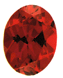
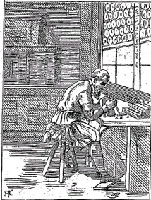
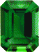
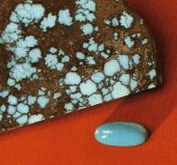
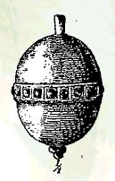
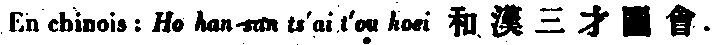
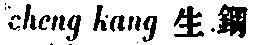
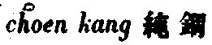
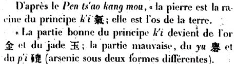
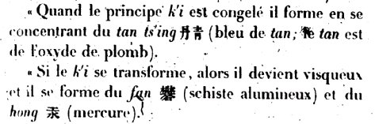
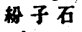
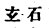
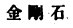
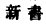
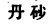
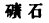
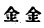
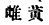
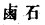
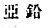
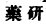
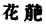
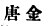
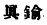
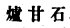
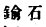
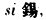
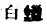
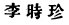
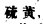
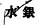
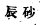
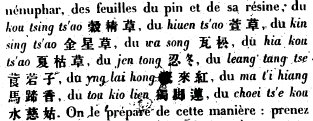
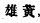
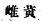
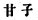
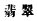
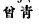
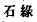
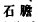
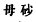
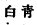
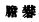
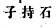
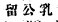
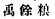
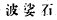
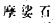
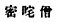
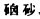
Noms cités
Fulcanelli · Paris · Hermes · Jean · Chevreul · Jung · Geber · Paracelse · Berthelot · Aristote · Artephius · France · Platon · Egypte